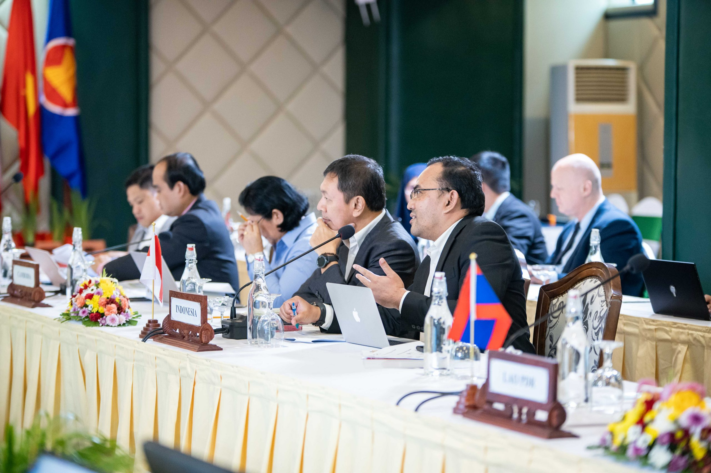
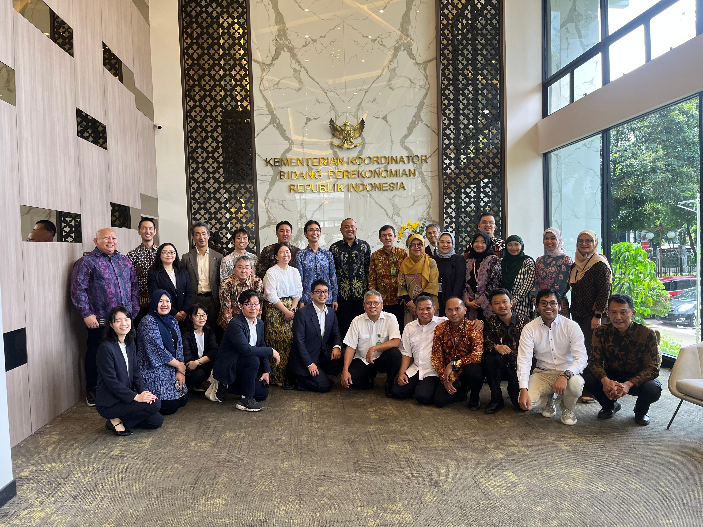
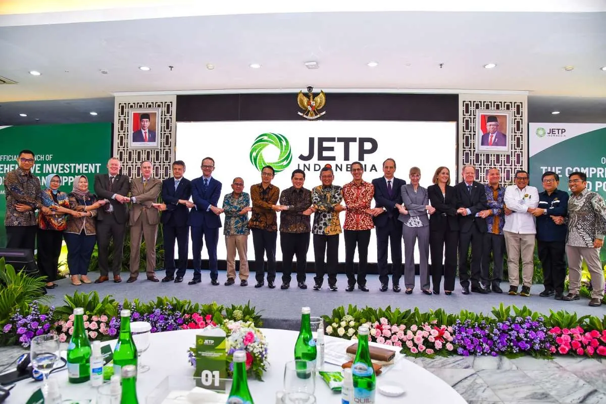
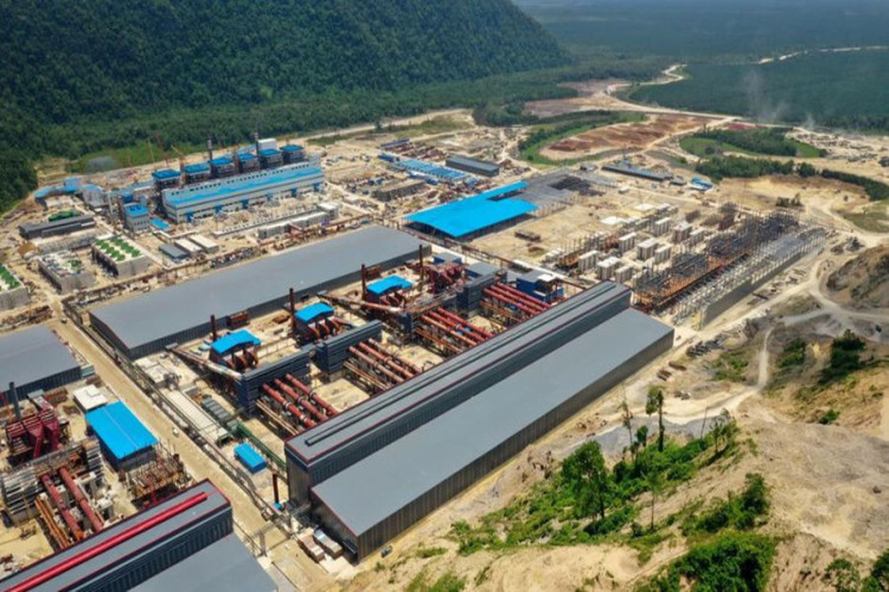
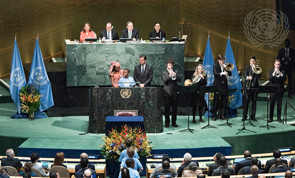
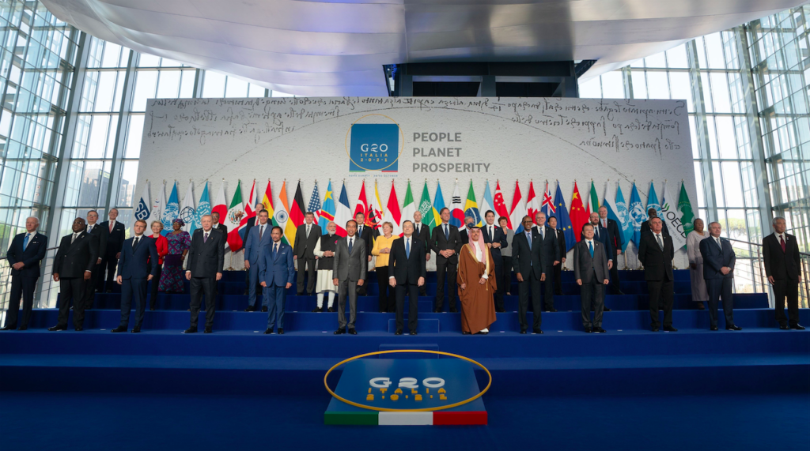

Contoh Kerja Sama Bilateral (SDGs 13)



JCM - Joint Crediting Mechanism
Program kerja sama JCM (Joint Crediting Mechanism) adalah program kerja sama antar Indonesia dan Jepang. Program ini mulai dirintis sejak 2010, diresmikan sejak tanggal 26 Agustus 2013 dan berjalan sehingga 2030. Program kerja sama ini fokus pada bidang lingkungan hidup, kehutanan, energi rendah karbon, dan alih teknologi.
Menyediakan lokasi proyek pelestarian hutan (REDD+) serta memfasilitasi kerja sama antara perusahaan daerah/swasta Indonesia dengan pihak Jepang.
Proyek-proyek teknologi rendah karbon telah banyak terlaksanakan, terjaganya kelestarian hutan dari deforestasi, serta diterbitkannya kredit karbon untuk menekan emisi gas rumah kaca.
Ini dapat menghubungkan SDGs 13 (Penanganan Perubahan Iklim) karena berfokus pada penurunan emisi karbon dan penurunan terjadi efek rumah kaca yang berdampak pada iklim.
Contoh Kerja Sama Regional (SDGs 13)
ASEAN Working Group on Climate Change - AWGCC
Program kerja sama AWGCC (ASEAN Working Group on Climate Change) adalah program kerja sama antar seluruh negara anggota ASEAN (Indonesia, Malaysia, Singapura, Thailand, Filipina, Brunei Darussalam, Vietnam, Laos, Myanmar, dan Kamboja). Program kerja sama ini mulai dibentuk pada 29 Oktober 2009 dan masih aktif hingga sekarang tanpa batas waktu berakhir. Program ini fokus pada bidang lingkungan hidup, mitigasi perubahan iklim, dan penanggulangan bencana kabut asap lintas batas.
Berperan aktif dalam perumusan Rencana Aksi Perubahan Iklim ASEAN, menjadi Vice-Chair (Wakil Ketua) pertemuan AWGCC, serta berkontribusi dalam ASEAN Joint Statement pada konferensi iklim global.
Meningkatnya koordinasi pencegahan kebakaran hutan dan kabut asap lintas batas serta terbentuknya pusat kolaborasi perubahan iklim (ASEAN Centre for Climate Change).
Program berkaitan dengan SDGs karena memperkuat ketahanan Asia Tenggara terhadap bencana iklim.
Contoh Kerja Sama Multilateral (SDGs 13)
JEPT - Just Energy Transition Partnership Indonesia
Program kerja sama JEPT (Just Energy Transition Partnership) Indonesia adalah kerja sama antara pemerintah Indonesia bersama International Partners Group (IPG) yang dipimpin Amerika Serikat dan Jepang (serta Kanada, Denmark, Uni Eropa, Prancis, Jerman, Italia, Norwegia, dan Inggris) serta lembaga keuangan global (GFANZ). Program ini diluncurkan pada 15 November 2022 (saat KTT G20 di Bali) dengan rencana implementasi hingga tahun 2030. Kerja sama ini fokus pada bidang lingkungan, energi terbarukan, teknologi hijau, dan pendanaan iklim.




Menyusun rencana investasi komprehensif (CIPP), mempercepat penghentian dini pembangkit listrik tenaga uap (PLTU) batu bara, dan mengembangkan pembangkit energi terbarukan di dalam negeri.
Komitmen pendanaan iklim sebesar US$ 20 miliar (sekitar Rp300 triliun), percepatan transisi menuju energi bersih, pengurangan polusi udara, serta penciptaan lapangan kerja hijau baru.
Kerja sama ini mendukung dan membantu SDGs karena secara langsung menargetkan penurunan emisi gas rumah kaca dari sektor energi dan mencegah pemanasan global yang lebih parah.
Contoh Kerja Sama internasional (SDGs 13)
Perjanjian Paris (Paris Agreement) dan Konferensi Perubahan Iklim PBB (COP UNFCCC).
Perjanjian Paris dan Konferensi Perubahan Iklim PBB (COP UNFCCC) adalah program kerja sama antara Negara-negara anggota Perserikatan Bangsa-Bangsa (PBB) di bawah kerangka kerja UNFCCC (yang mengandung lebih dari 190 negara). Pertama kali program disepakati terjadi pada Desember 2015 dan sampai sekarang tetap aktif setiap tahun dalam konfrensi COP. Program kerja sama ini fokus pada bidang lingkungan hidup, kebijakan iklim global, pendanaan iklim, dan alih teknologi.



Meratifikasi perjanjian ke dalam hukum nasional, menetapkan target penurunan emisi nasional (Enhanced NDC), serta aktif membuka Paviliun Indonesia dalam setiap konferensi COP PBB.
Adanya target terukur penurunan emisi gas rumah kaca nasional (sebesar 31,89% dengan upaya sendiri atau 43,20% dengan dukungan internasional pada 2030).
Program ini berkontrubsi dalam mengatasi SDGs karena merupakan kesepakatan global utama untuk menahan laju kenaikan suhu bumi di bawah 1,5°C.